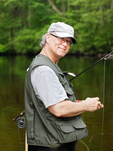

Target Audience
This site will be for anyone in the South East Idaho area that is interested in the weather and local news. Adults will be able to comment on local news and weather forecasts, as well as provide information on what to do in case of a storm warning. This site is for adults and children and could benefit anyone in the South East Idaho area.
Two Personas
Meet Joe!
Joe is a fishermen in the local area. When asked what his favorite thing to do is Joe replied, "I just love Fishing!" He is 60 years old and well just like he said, he loves to be outside fishing! Joe has multiple favorite fishing sites and visits one of them at least 3 times a week. Joe uses our site to check the weather before every trip, because nothing can ruin your fishing trip like bad weather. With the help of our site Joe can decide when it's too bad out to go fishing, and instead spend his day at home with his lovely wife Karen.
Meet Susan!
Susan is a local in your area and loves using our site! Susan is 53 and doesn't like navigating the web. Thanks to our app Susan can talk to friends, check the local news, and check the weather forecast all in the same place. "I use this site to stay in touch with friends, check the news and the weather! It really is everything you need in one app" - Susan Susan loves to take walks outside with her kids and grandchildren, that's why it is important that we provide the most accurate forecast possible. We wouldn't want Susan getting caught out in the rain!
Scenarios
1. What is the weather going to be like this weekend? 2. Was there a fire downtown? What happened? 3. What day is the farmers market again? 4. What do people think of the fire that happened downtown? 5. Is there any local news that I don't know about yet?